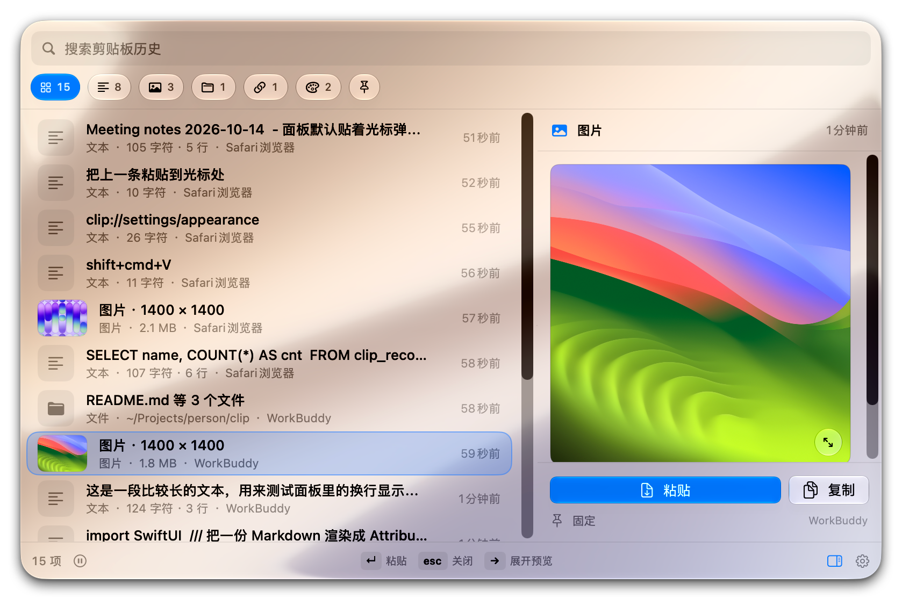
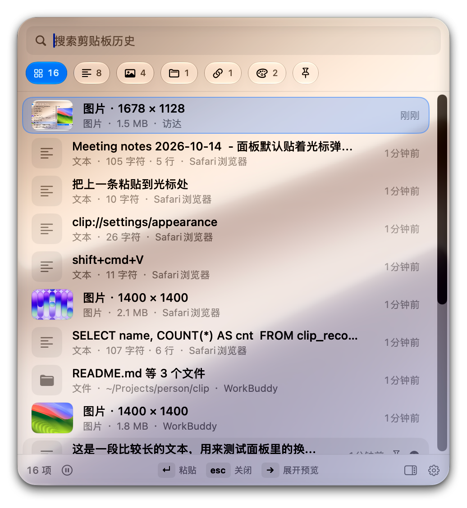
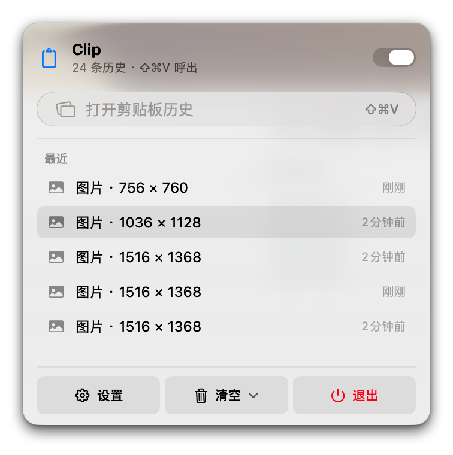
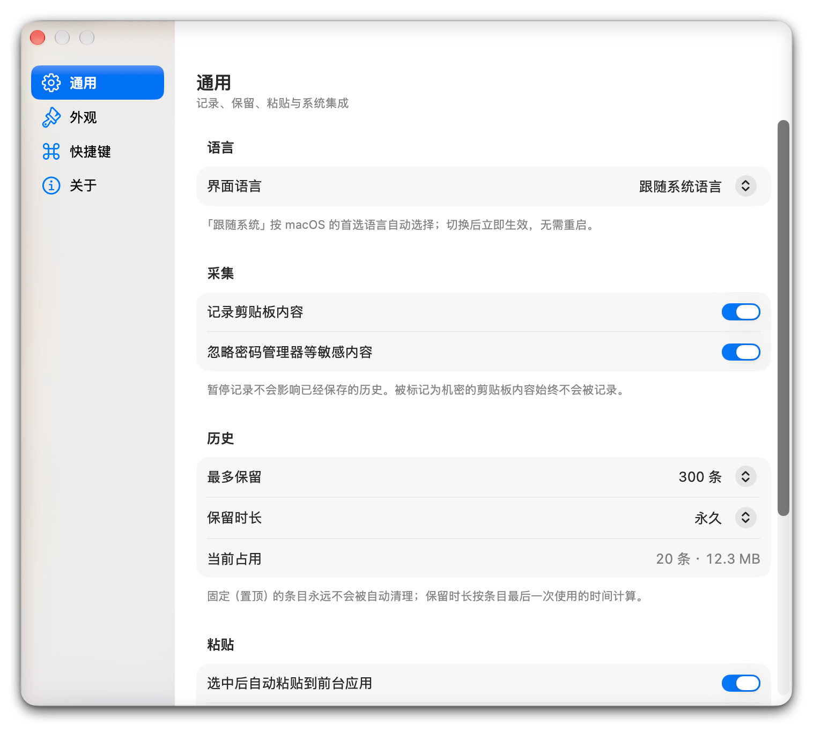
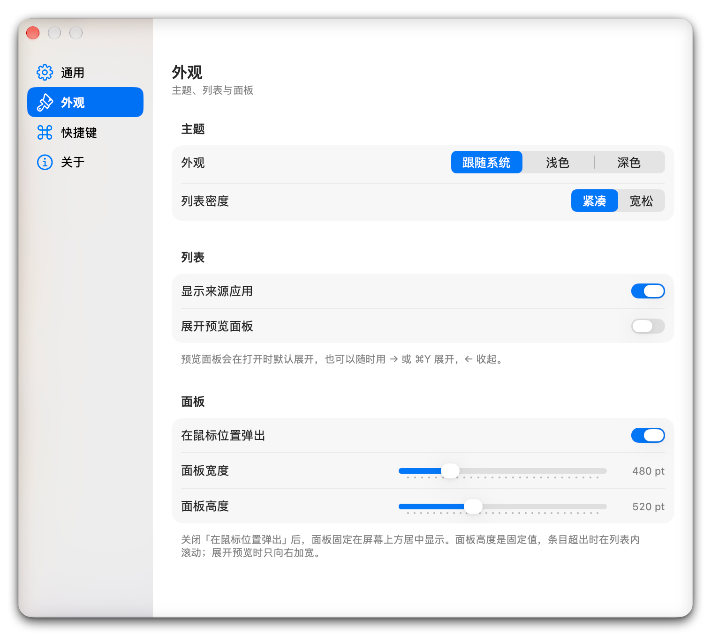

什么都记得
文本、链接、颜色值、代码、文件路径、图片，复制什么记什么，每条都标着来自哪个应用。截图、设计稿、复制的色值，各自归位不打架。
Clip 是一款常驻 macOS 菜单栏的剪贴板历史管理器。复制过的一切——文本、链接、色值、代码、图片——都安静地记着。⇧⌘V 随叫随到，回车即粘。

主面板：分类筛选、实时计数、来源标注，向右展开预览
「你复制了一段代码，切去查文档；回头再要用，剪贴板已经被新内容覆盖了。」
Clip 在后台安静地记下你复制过的一切。没有窗口常驻，没有标签页，不用先想「我要找什么」——历史就摊在你面前，翻一下就行。
核心能力
从呼出、选择到粘贴，全流程键盘完成；细节处也都替你想到了。
文本、链接、颜色值、代码、文件路径、图片，复制什么记什么，每条都标着来自哪个应用。截图、设计稿、复制的色值，各自归位不打架。
贴着光标弹出，鼠标在哪就在哪出现；屏幕放不下时自动翻到另一侧。高度固定，条目再多也只在列表内部滚动——呼出的瞬间窗口不会上下跳。
选中一条按回车，直接送到当前光标处，不用手动切回上一个应用。⌥↵ 还能以纯文本粘贴，不带格式。
选中一条按 → 向右展开预览，左上角固定不动，正在看的列表不会横向跳动。图片点一下放大到屏幕尺寸比对，任意处或 esc 收起。
不方便用快捷键时，点状态栏图标也行：开关记录、看最近几条、直接从菜单栏粘贴。
通知中心 / 桌面小组件显示最近几条历史，点一下即复制，点空白处呼出完整面板。
顶部搜索框实时过滤。⌘P 固定过的条目永远不会被自动清理，参数、地址、常备片段这类东西可以一直留在手边。
密码管理器标记为机密的剪贴板内容默认不记录，不记录自己回填的内容，可随时暂停记录——数据只在你本机。
语言、深浅色、列表密度、保留条数与时长、呼出方式，所有改动立即生效，没有「应用」按钮，不需要重启。
全键盘操作
从呼出、选择到粘贴，全流程键盘完成。呼出键可改成任意组合键，速查面板就在设置里。
| ⇧⌘V | 呼出 / 收起（可改成任意组合键） |
| ↑↓ | 选择 |
| ↵ | 粘贴到光标处 |
| ⌥↵ | 以纯文本粘贴（不带格式） |
| →← | 展开 / 收起预览 |
| ⌘1–⌘9 | 直接粘贴第 N 条 |
| ⌘P | 置顶 / 取消置顶 |
| ⌘⌫ | 删除这一条 |
| esc | 收起面板 |
实际样子
原生 SwiftUI + AppKit，跟随系统 Liquid Glass 与深浅色，没有一行第三方 UI 库。




下载与安装
通过 GitHub Releases 分发。安装包由 CI 自动构建，附 SHA-256 校验值。
从 GitHub Releases 下载最新版的 Clip-1.0.10.dmg。也可以点上方按钮直接开始下载。
打开 .dmg，把 Clip 拖到「应用程序」文件夹（或运行其中的安装示意），然后弹出镜像。
Clip 使用自签名证书，Gatekeeper 可能提示「无法验证开发者」。在「应用程序」里右键 → 打开，再点「打开」；或在「终端」执行：
xattr -dr com.apple.quarantine /Applications/Clip.app
之后启动，菜单栏会出现剪贴板图标。
想让 Clip 帮你按下 ⌘V，去 系统设置 → 隐私与安全性 → 辅助功能 勾选 Clip。不授权也能用，只是变成「复制好等你手动粘」并给个提示。
之后每次复制都会被记下。置顶（⌘P）过的条目永远不会被自动清理。
辅助功能授权与自签名证书绑定，更新版本后无需重新授权。卸载：退出 Clip 后删掉「应用程序」里的 Clip.app，数据目录 ~/Library/Application Support/Clip 可一并删除。
隐私
密码管理器（1Password、TypeIt4me 等）标记为机密的剪贴板内容不会被记录。
不记录自己回填的内容，也不会把你的历史再抄一遍。
菜单栏一键开关，想安静的时候就安静。
历史存在 ~/Library/Application Support/Clip，不上传、不同步、没有账号。
条数（默认 300）和保留时长都可调，还能一键清空全部数据。
代码在 GitHub 上完全公开，每一行都可以自己看。
开源
基于 MIT 协议发布，可以自由使用、修改与分发。